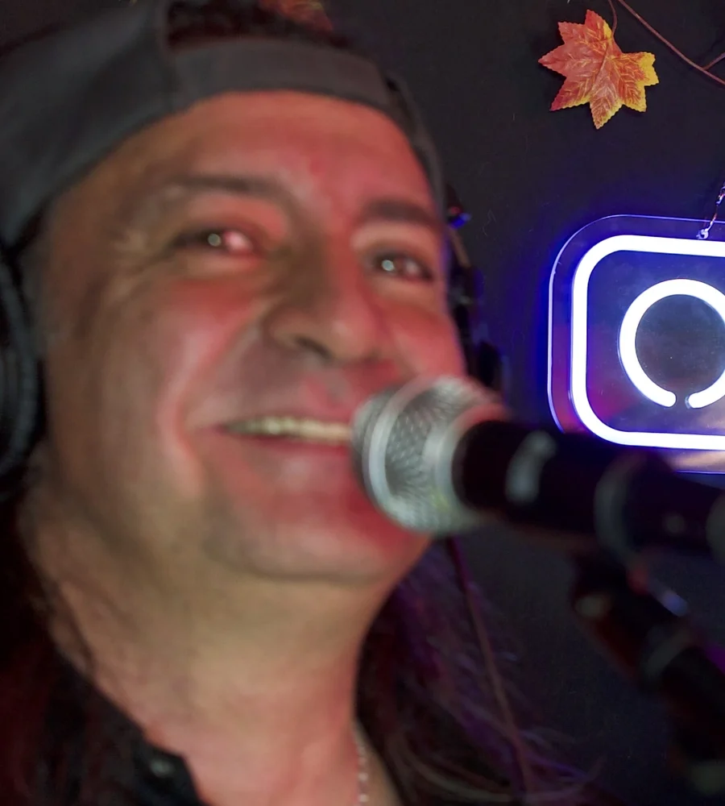
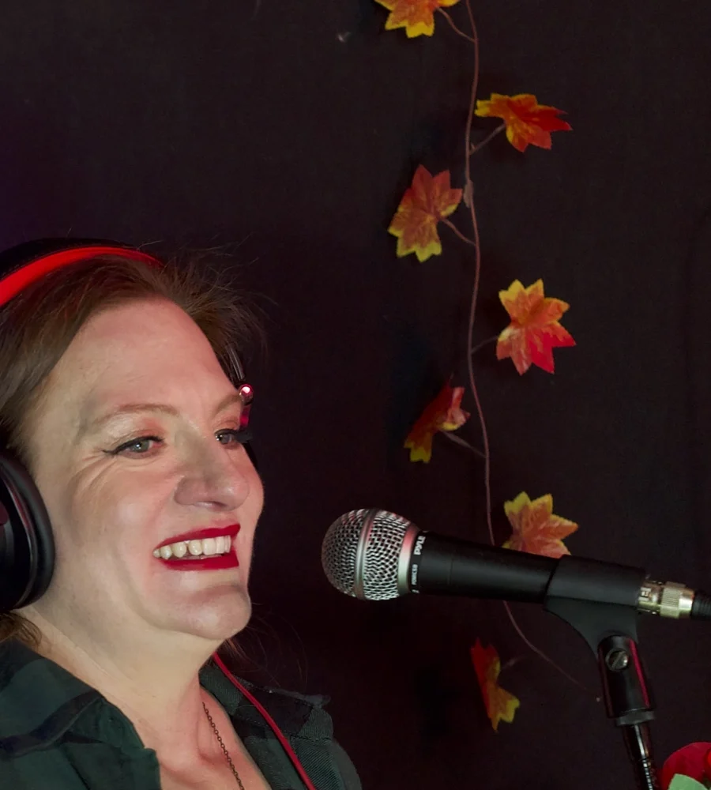
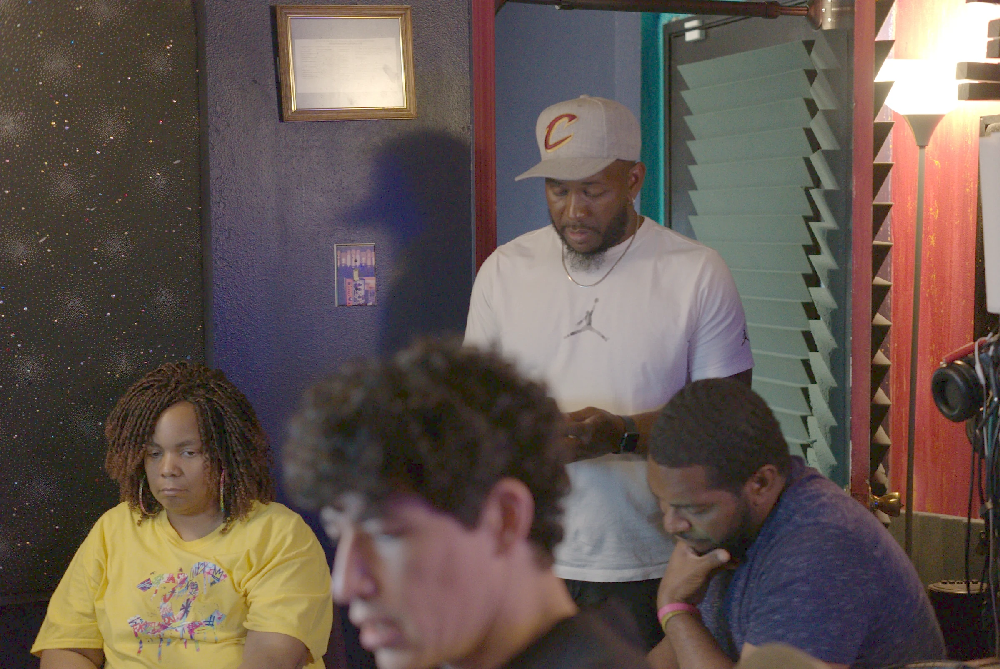
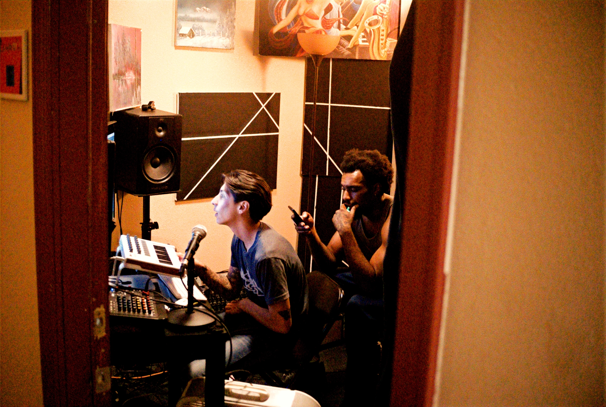
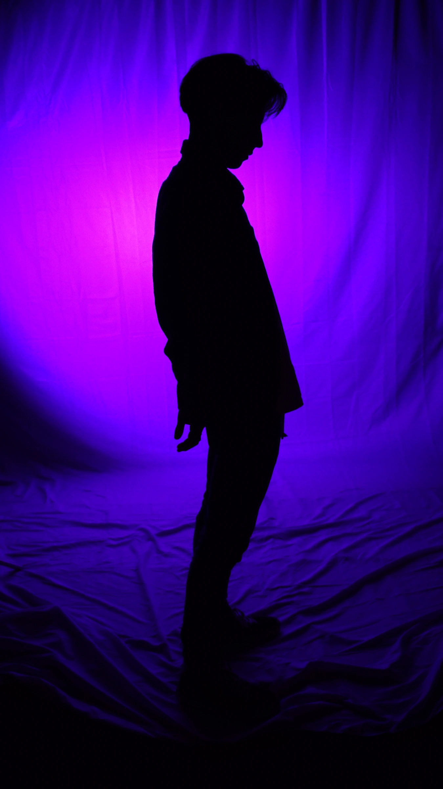

Checkmark Tonight
Studio performances and conversations with musicians and bands.


The work
around the work.

Studio performances and conversations with musicians and bands.


People, sessions, and the creative work taking shape in the rooms.

A visual archive of the music, media, and release-ready work made here.

Made in Albuquerque. Heard beyond it.